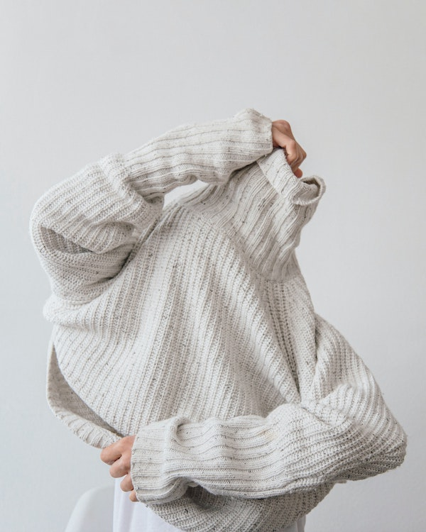
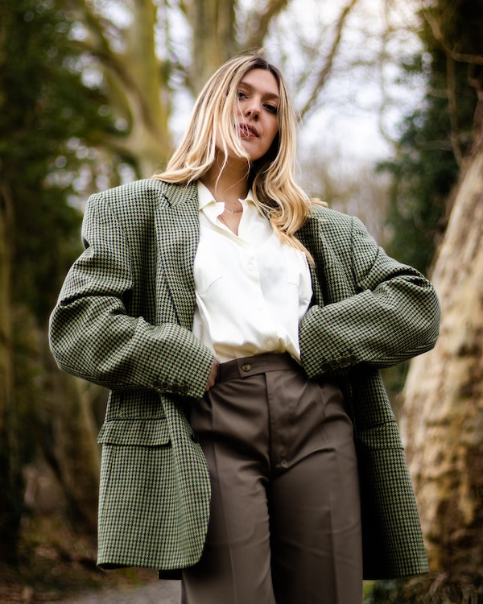

- Trending Clothing of the season:
Sweaters: One of the top street styler’s favorite items is definitely knits. As a year around wardrobe staples, knits are perfect transitional pieces to take you from fall’s chill to winter’s colder temperatures. In spring 2023 season, we see more soft and fluffy sweaters that match perfectly with sequined skirts, tailored corduroys, minis; wrap a sweater over your shoulders or layer it under a cozy jacket. You name it!
Blazers: - Slouchy, oversized blazers were all the rage at Valentino and even Chanel opted for relaxed-fit versions of its trademark bouclé jackets in playful pinks. If you're a die-hard sharp tailoring gal, luckily Victoria Beckham came through with simple tailored blazers that acted as mini dresses.
Denim: Designers made denim sexy for SS23 – who'd have thought it? Asymmetric fitted shirts paired with soft brown co-ords at A.W.A.K.E. had a certain hippyish glam, whereas Bella Hadid's buckle Givenchy buckle bra exuded utilitarian sultriness.